Serveur DNS Recursif ANDY¶
Auteurs : Andy REMY Date de création : 02/10/2025

Administration et exploitation des services¶
Activité 1 - Mise en place de serveur DNS au sein de l’entreprise CUB¶
Partie 1 : Réaliser un nouveau schéma logique¶

Partie 2 : Installation et paramétrage du serveur DNS Récursif¶
Pour commencer, une fois ma VM sous nutanix créé, j’ai modifié son adresse IP 192.168.1.10 et afin qu’il soit également dans le VLAN Production comme demandé.
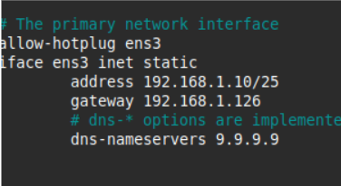
Nous pouvons commencer l'installation.
1. Vérification préalable¶
Mettez à jour votre serveur
- sudo apt update && sudo apt upgrade
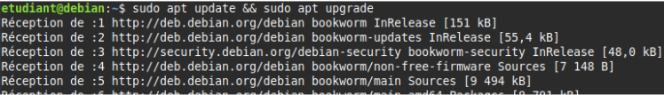
Sur votre serveur Debian 12, installez le service de journalalisation rsyslog à la place de journalctl. Cela vous permettra de disposer de fichiers de log clairs au format texte situés dans /var/log. - sudo apt install rsyslog
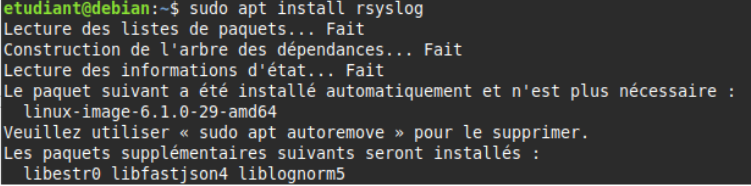
2. Définir les paramètres réseaux du serveur.¶
- sudoedit /etc/network/interfaces
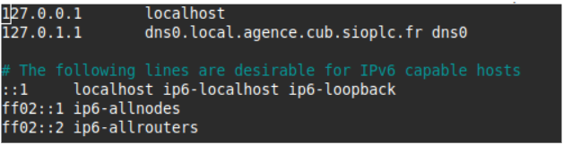
3. Définir le serveur DNS récursif à utiliser¶
sudoedit /etc/resolv.conf
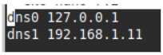
4. Prendre en compte les modifications des paramètres réseaux¶
- sudo systemctl restart networking
5. Configurer correctement les fichiers /etc/hostname et /etc/hosts¶
Le fichier hostname sert à donner un nom à votre serveur.
- sudoedit /etc/hostname dns0
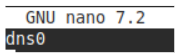
- sudoedit /etc/hosts
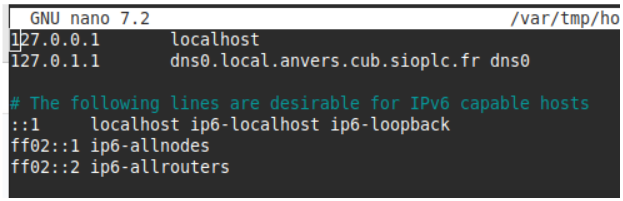
Il est nécessaire de redémarrer le serveur pour prendre en compte le changement de nom. sudo shutdown -r now
6. Installer Unbound et les outils d'administration appropriés¶
- sudo apt install unbound dnsutils tcpdump tmux curl
7. Configurer Unbound¶
- sudoedit /etc/unbound/unbound.conf
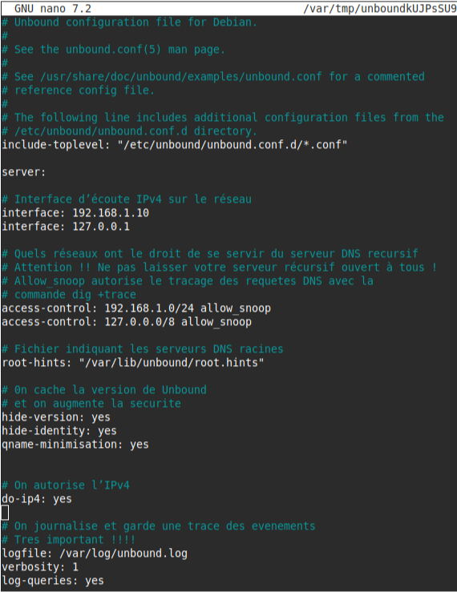
Il est important de vérifier ensuite que la syntaxe des lignes contenues dans le fichier de configuration est correcte. Pour cela, il existe la commande unbound-checkconf.
- sudo unbound-checkconf
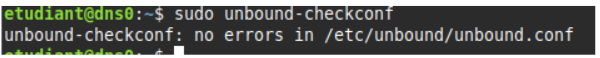 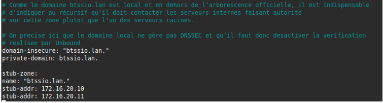
On récupère les adresses des serveurs racines et nous les stockons dans le fichier /var/lib/unbound/root.hints. Ce fichier est indispensable et permet au service Unbound de savoir comment contacter le serveur racine le plus proche ou rapide.
- sudo curl --output /var/lib/unbound/root.hints https://www.internic.net/domain/named.cache
- sudo chown -R unbound:unbound /var/lib/unbound/
On crée le fichier de log spécifique à Unbound.
- sudo touch /var/log/unbound.log
- chown unbound:unbound /var/log/unbound.log
- sudo systemctl restart unbound
- sudo systemctl status unbound
⚠️Attention !! Sur les systèmes Debian récents, un logiciel de sécurité de type MAC (Mandatory Access Control) nommé AppArmor est activé par défaut. Il surveille entre autres les droits d’accès des différents processus lancés sur le système. Par défaut, AppArmor empêche le service unbound de lire et d’écrire dans le répertoire /var/log/. Il est donc indispensable de changer ces permissions.
- sudoedit /etc/apparmor.d/usr.sbin.unbound
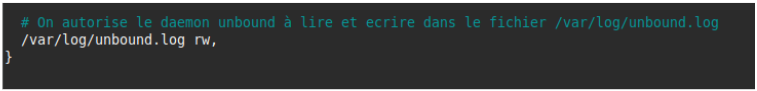
On vérifie que le nouveau fichier de configuration de AppArmor ne contient pas d’erreurs puis on redémarre le service. - sudo apparmor_parser -r /etc/apparmor.d/usr.sbin.unbound - sudo systemctl restart apparmor
Si l’on souhaite observer les événements journalisés : - sudo cat /var/log/unbound.log
Si l’on souhaite observer les derniers évènements enregistrés dans le fichier de log en temps réel : - sudo tail -f /var/log/unbound.log
Partie 3 : Test du serveur DNS Récursif¶
Sur mon poste, je me suis placé dans le Vlan Administration, puis j’ai réaliser la commande suivante :
- dig dns
- dig 192.168.1.
- dig 192.168.1.1 1
- dig @192.168.1.10 google.com
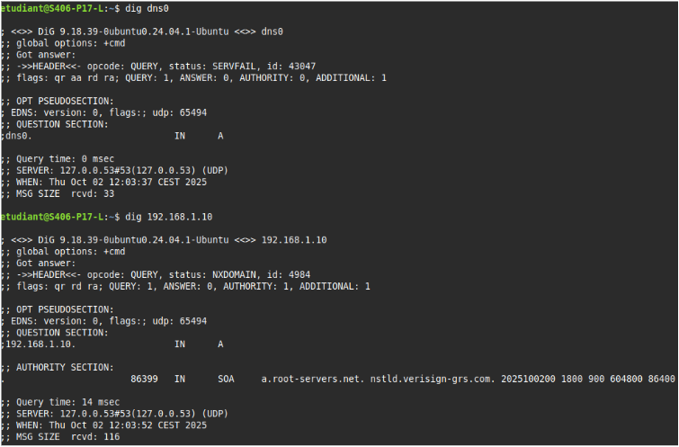 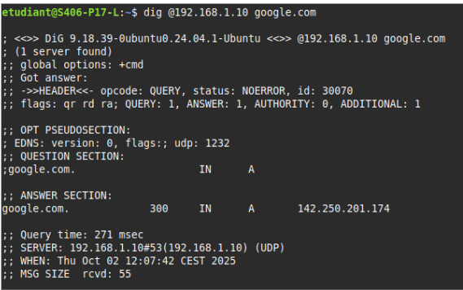 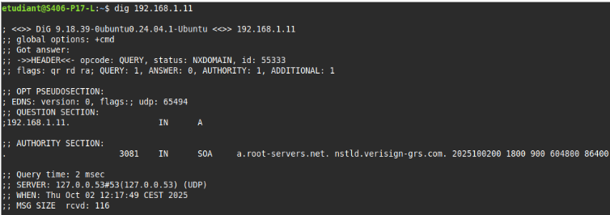
Voilà, notre serveur DNS Récursif est opérationnel !!